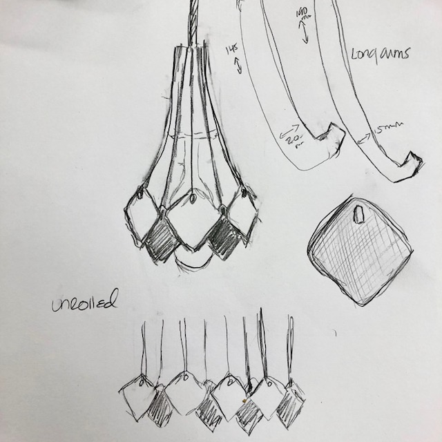

Assignment 3: Lamp

Steps Taken:

Using the Exo Series by Rakumba, designed by Rowan Turnham, Matthew Harding and Rakumba, I set out to design a form that mirrors a favored double bellied vase form I used to make when I was working as a ceramic artist.
I created the double belly shade form in Illustrator, using the measurements from my skecth and the lamp parts.
I sketched in the lamp components while I impatiently waited for Amazon to deliver my bulbs.
I designed the piece to hold my shade parts in Rhino, using Rhino's command for polar array and the subtraction method Nadya demonstrated in class.

I used the program settings demonstrated from class and with generous help from my classmate Tyson.
I then used the laser cutter at 100% power, 10% speed, 10% frequency on a 6x12 birch panel.


The final result!
When I do this again I would make the 3d printed piece come out further from the edge so I could arrange the laser cut pieces higher on the lamp. I also would like to cut clear acrylic and make 8 instead of 4 pieces to add around the bulb